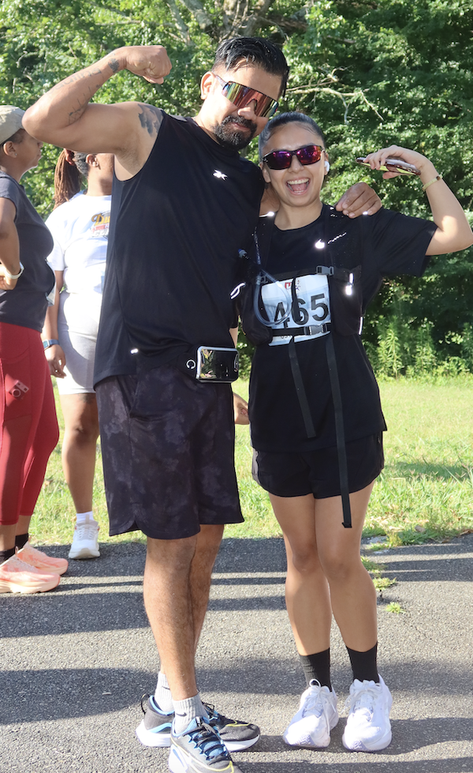

Introduction

My name is Diana Alamilla-Ramirez, and I’ve lived in charlotte all my life. I love fitness, and most of my life revolves around my lifting and running schedule. I use fitness to cope with the things in my life that I cannot control.
- Personal Background:I was born in Mexico. I love running and doing things that get the adrenaline rushing through my veins.
- Professional Background:I’ve worked in the restaurant industry for my entire life. I've worked as a server from age 12 to 20 and then switched to hostessing ever since.
- Academic Background:I’m currently finishing my associate degree at CPCC and plan to transfer to UNC Charlotte in the spring. I’m interested in technology, particularly data analysis and web development.
- Primary Computer: Apple MacBook, macOS, laptop, primarily used at home and school.
- Courses I’m Taking, & Why:
- WEB 140 – Web Development Tools: I’m taking this course to learn more about the tools used to create and manage websites and to improve my web development skills.
- WEB 115 – Web Markup and Scripting: I’m taking this course to learn how websites are structured and how markup and scripting can be used to make them more interactive.
- CSC 152 – SAS: I’m taking this course to gain more experience working with data and using SAS for data analysis, which relates to my interest in data analytics.
- Funny/Interesting Item to Remember Me By: I usually start my day by waking up at 4 am and going to the gym.
Quote:
“Success is the sum of small efforts, repeated day in and day out.”
— Robert Collier